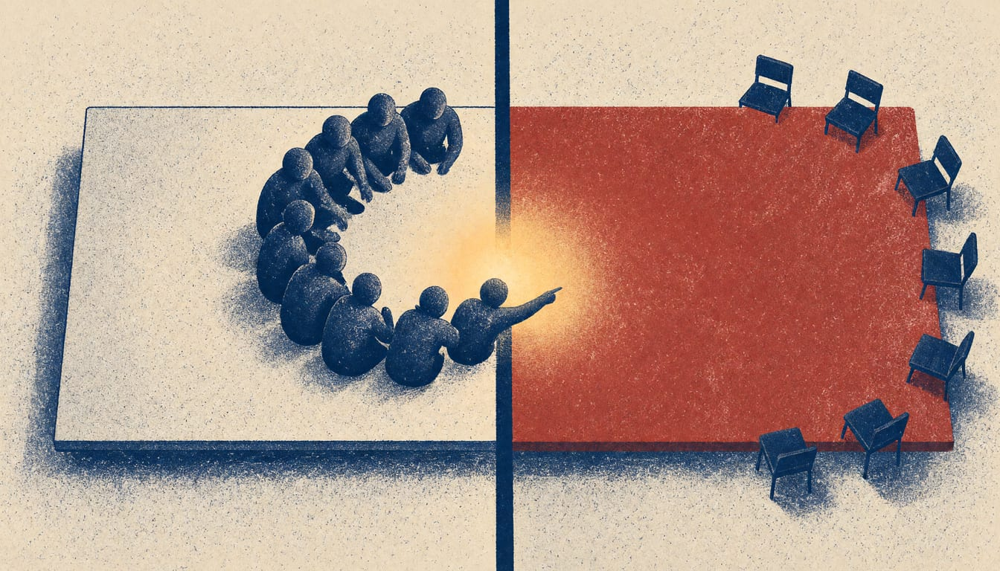

Zelensky says US asked whether Ukraine would leave Donbas for NATO membership
The Ukrainian president said there is no concrete proposal yet and no deal could recognise the occupied territories as Russian. In Abu Dhabi, the talks were conducted without EU representatives, according to a Kremlin aide.

The United States for the first time asked Ukraine whether it would leave Donbas in exchange for NATO membership, Ukrainian President Volodymyr Zelensky said on 13 November. He said there is no concrete proposal yet. Any deal, he said, would come without any recognition of the occupied territories as Russian.
Zelensky said the American negotiators agreed that Europe would take part in the next round of talks, and took the proposal to Moscow. He said the format of its representation is still undefined, most likely a group of several officials. On the second day in Abu Dhabi, the Russian delegation refused to discuss a ceasefire, territory, energy or Black Sea security, RBC-Ukraine reported, citing its sources.
"If the American side confirms precisely this to us, together with other NATO partners, then I will ask our Ukrainian society what it thinks: do we accept it or not?" Zelensky told journalists. He said he has no right to make that decision on his own. All parts of the proposal are still under discussion, he said. "But we need specifics, and we don't have them yet."
Kremlin aide Vladimir Medinsky said the Russian delegation met no European Union representatives in Abu Dhabi, even though some were present, and that the talks were trilateral. Russia, he said, had received no concrete peace initiatives from European countries. According to The New York Times, Russian officials in Abu Dhabi also held up the Cold War as a model for the continent's future arrangement. In it, Europe was divided into American and Soviet spheres of influence.
From Abu Dhabi, the US delegation went on to Moscow, where envoys Steve Witkoff and Jared Kushner were reportedly to meet Russian leader Vladimir Putin, and then to Dublin, where they met Zelensky on 12 November.